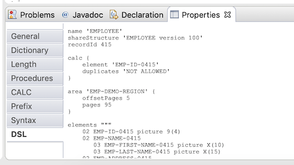
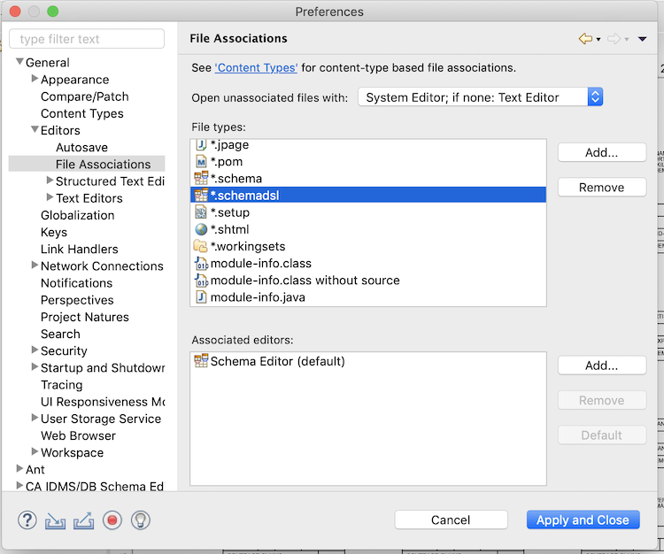

File Extensions
Each diagram is maintained as a Java object graph that is implemented with the Eclipse Modeling Framework (EMF).
Without going into details about EMF, it is fairly easy from a technical point of view to persist such object models to
disk as an XML file (file extension : .schema), as well as to rebuild that object model (in memory) from such an
XML file. This is the original way the Schema Editor used (and still can use) to persist and restore its diagram object
graphs.
We all like to tweak the internals of the products we use and the problem with the XML style of persisting the object
object models is that they can be hard to understand because of the numerous references between objects : the
Schema Editor's object model isn't purely hierarchical.
That's why, along the way of the Schema Editor's development, an alternative file format was designed : a simple DSL
(Domain Specific Language) was developed to represent the diagram in a much more readable (and tweakable) text
format that is also, when saved to disk, suitable to rebuild to object model. The file extension here is
.schemadsl.You can see the DSL version of your diagram (schema) components in action in the DSL tabs :

Which of the 2 file extensions you prefer is really up to you. The default file extension (in your Eclipse
preferences) is still .schema because from time to time bugs come to the surface and these can prevent you from
doing your job with the Schema Editor. This shouldn't scare you off to use the .schemadsl file extension however
because it's easy to convert a diagram from 1 file format to the other using the File/Save As... menu item (or to fix the
issue directly in the file).
You will notice that .schemadsl files take more time to load in Eclipse, especially for large schemas. It is my believe
however that this file format offers more opportunities, e.g. nobody prevents you from generating the .schemadsl files
yourself (using whatever source comes to your mind); doing that with the XML file format would be very hard.
The Diagram Editor registers itself in the Eclipse workbench as the default editor for .schema and .schemadsl files :
